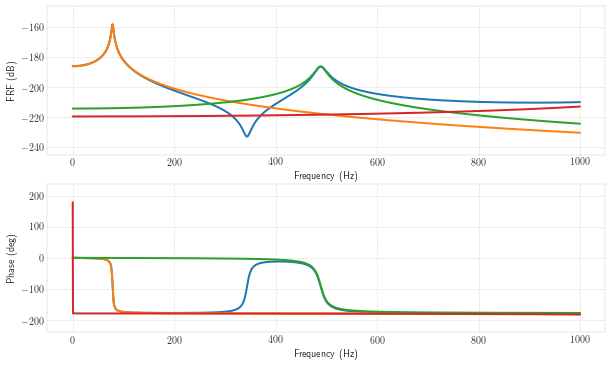
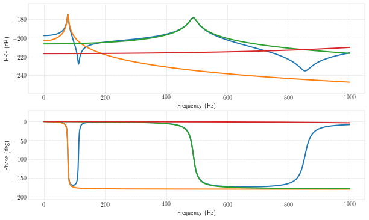
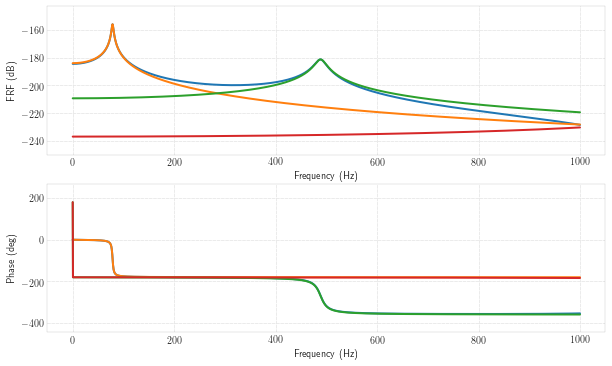

In [1]:
%matplotlib inline
import matplotlib.pyplot as plt
# I don't like importing this way (pollutes the namespace) but haven't had time to fix it yet.
import vibration_toolbox as vtb
import numpy as np
In [ ]:
w, x, U = vtb.euler_beam_modes(bctype = 3)
In [ ]:
plt.plot(x,U[:,0],'-')
In [2]:
fout, H = vtb.euler_beam_frf(xin = .1, xout = .3)

In [3]:
fout, H = vtb.euler_beam_frf(xin = .1, xout = .1)

In [4]:
fout, H11 = vtb.euler_beam_frf(xin = .1, xout = .1)
#frfplot(fout, H)

In [5]:
fout, H = vtb.euler_beam_frf(xin = .1, xout = .35)

In [7]:
from ipywidgets import interact, interactive, fixed, interact_manual
In [8]:
def ebi(xin=.4,xout=.4):
w, v = vtb.euler_beam_frf( xin = xin, xout = xout)
print(xin)
plt.show()
In [12]:
interact(ebi, xin = (0.0,.4, 0.0005), xout = (0.0,.4, 0.0005))
#display(ww)
Out[12]:
<function __main__.ebi>
In [11]:
ebi()
0.4
In [12]:
w = interactive(vtb.euler_beam_frf, xin = (0.0,.4, 0.0005), xout = (0.0,.4, 0.0005))
display(w)
In [13]:
def f(m, b):
plt.figure(2)
x = np.linspace(-10, 10, num=1000)
plt.plot(x, m * x + b)
plt.ylim(-5, 5)
plt.show()
interactive_plot = interactive(f, m=(-2.0, 2.0), b=(-3, 3, 0.5))
output = interactive_plot.children[-1]
output.layout.height = '350px'
interactive_plot
In [14]:
z = interactive(ebf, xin = (0.0,.4, 0.0005), xout = (0.0,.4, 0.0005), fmin = (0, 10000,10), fmax = (1000, 20000, 10), zeta = (0., .2, .001))
display(z)
---------------------------------------------------------------------------
NameError Traceback (most recent call last)
<ipython-input-14-207bd9319924> in <module>()
----> 1 z = interactive(ebf, xin = (0.0,.4, 0.0005), xout = (0.0,.4, 0.0005), fmin = (0, 10000,10), fmax = (1000, 20000, 10), zeta = (0., .2, .001))
2 display(z)
NameError: name 'ebf' is not defined
In [ ]: